STOCHSIM, the stochastic simulator
Carl Firth, Nicolas Le Novère and Tom Shimizu
This manuel is a little bit obsolete. See the PDF version instead
STOCHSIM is a discrete, stochastic simulator. It employs a simple,
novel algorithm in which enzymes and other protein molecules are
represented as individual software objects interacting according to
probabilities derived from concentrations and rate constants.
Formally, it is a mesoscopic simulator, meaning that it stores an
internal representation of every molecule in the system as a unique
object, but does not simulate diffusion. The program was written in
standard C++, according to the ANSI current working
paper1.1.
When a simulation is executed, the reaction system is constructed by
creating all the necessary objects in turn. First the event manager is
created, which is responsible for changing the system during the
simulation; for instance, the user may wish to change the
concentration of signalling molecules half way through the simulation.
Then the random number generator is created, based on an algorithm
which breaks up any sequential patterns using a shuffle table. Objects
representing each type of molecular species in the system are
initialised and then large numbers of objects each representing an
individual molecule are created. It is possible to create molecules
which have specific states, called multistate molecules; these react
according to the state they are in and are usually used to reflect
covalent modification, such as protein phosphorylation. A number of
dummy, or pseudo-molecules, are also created at this time, which are
used in the simulation of unimolecular reactions: if a molecule reacts
with a pseudo-molecule, the former may undergo a unimolecular
reaction. Next, a look-up table is constructed which defines all the
possible ways in which molecules can react in the system. For every
bimolecular reaction, the row is selected according to the first
reactant and the column by the second reactant; the corresponding
entry in the look-up table then gives the probability that these two
reactants will react and what the products will be. Finally, objects
are constructed that represent variables being output to the screen
and saved to file. Each variable is responsible for recalculating its
current value as necessary.
The STOCHSIM algorithm
Execution follows a very simple algorithm. Time is quantised into a
series of discrete, independent time-slices. In each time-slice, one
molecule (not a pseudo-molecule) is selected at random. Then, another
object, in this case either a molecule or a pseudo-molecule, is
selected at random. If two molecules were selected, any reaction that
occurs will be bimolecular; if one molecule and a pseudo-molecule were
selected, it will be unimolecular. Another random number is then
generated and used to see if a reaction occurs. The probability of a
reaction is retrieved from the look-up table: if the probability
exceeds the random number, the particles do not react; if the
probability is less than the random number, the particles react, and
the system is updated accordingly. The next time-slice then begins
with another pair of molecules being selected.
The probabilities that a reaction will occur after the molecules have
been selected are calculated as:
- If a first molecule A is selected and the second is a
pseudo-molecule, the probability that A will undergo a
unimolecular reaction is:
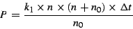
- If two molecules are selected, the
probability that they react together is:
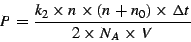
Where:
| 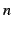 |
= |
number of molecules in the system |
| 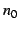 |
= |
number of pseudo-molecules in the system |
| 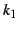 |
= |
unimolecular rate constant (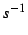) |
| 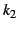 |
= |
bimolecular rate constant (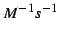) |
| 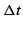 |
= |
time-slice duration () |
| 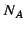 |
= |
Avogadro constant |
| 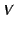 |
= |
volume of the system () |
The number of pseudo-molecules is calculated to minimise the stiffness
between the unimolecular and bimolecular reactions. For this we
require that the probability of the fastest unimolecular reaction is
as close to the probability of the fastest bimolecular reaction as
possible. Hence, by equating the two probabilities:
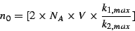
Where 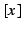 represents the non-zero positive integer nearest to .
Multistate molecules
Besides its discrete, stochastic algorithm, another feature that makes
STOCHSIM unique is its ability encapsulate internal states of
molecules within each instance of a molecule object. The activity of
many enzymes and signalling proteins in living cells are controlled by
numerous factors such as covalent modification, the binding of ligand
or other subunits, and conformational changes of the protein. It is
possible to model such internal states of a single reacting molecule
as separate molecular species, and this is in fact how most simulators
handle this problem. However, STOCHSIM provides an alternative
method, which takes advantage of the way molecules are represented as
individual software objects.
Molecules that possess many internal states can be modelled as a
special type of molecule, called multistate molecules.
Multistate molecules have a set of binary flags (flags which are
either 'on' or 'off'), which can be used to represent the state of the
molecule. For example, a single flag could be used to express whether
or not an external ligand is bound to a transmembrane receptor.
Another flag could be used to distinguish between two functionally
distinct conformations of the same receptor. Another could be used to
encode the state of a phosphorylation site on its cytoplasmic domain,
and so on. The combination of the states of all flags, therefore,
defines the state of a multistate molecule, and this is readily
expressed as bit strings (strings of 0's and 1's), e.g. ``0010'' when
there is four flags, and only the third one is on). The state of each
multistate molecule can change over the course of a simulation,
either as a consequence of explicitly computed reactions (following
the algorithm described in section 1.2), or by means of
rapid equilibria, which are a special feature of multistate
molecules that are provided to deal with stiffness in the reaction
system.
In short, multistate molecules provide a conceptually simpler
alternative to defining the large number of separate molecular species
and associated reactions that would otherwise be necessary. With
multistate molecules, the user can simply define how each state of a
multistate molecule will affect a reaction rate in relative terms. An
additional advantage of multistate molecules is that its use can
contribute to computational efficiency when the number of possible
internal states are very large. This is because STOCHSIM does not
need to sift through a large number of possible reactions at each
simulation interval, and only has to apply the relative effect of the
internal state in the algorithm described above.
The configuration files
The format of STOCHSIM configuration files follows that of Windows
initialisation files. Sections are headed by a title between square
brackets. Inside each section, one parameter per line is specified in
the form, parameter = value. Comments can be added after a
semicolon.
[A Section]
parameter1=value ; A comment
parameter2=value
; A
; multiline
; comment
[Another Section]
parameterA=value
parameterB=value
This file (STCHSTC.INI) describes the general configuration of a
simulation, independently of the objects and the reactions.
- DisplayInterval
- The interval between the two displays of variable values,
in units of seconds (floating point) or simulation
iterations (integer). The units are specified by the
TimeUnits parameter in the [Options] section).
- StoreInterval
- The interval between two storages of variable values,
in units of seconds (floating point) or simulation iterations
(integer). The units are specified by the TimeUnits
parameter in the [Options] section).
- TimeIncrement
- The duration of each simulation iteration, in
units of seconds (floating point) or simulation iterations
(integer). The units are specified by the TimeUnits
parameter in the [Options] section).
- SimulationDuration
- The length of the simulation, in units of
seconds (floating point) or simulation iterations (integer). The
units are specified by the TimeUnits parameter in the
[Options] section).
- ReactionVolume
- The total volume of the reaction system, in
litres (floating point; the exponential form, e.g. ``1.41e-15'', can
also be used).
- MaximumNumberComplexes
- The maximum number of complexes (not the
number of complex types!) allowed in the reaction system (integer).
Note that this number should be large enough to account for the
total number of complexes that may need to be represented at any
point in the simulation (not just the number of complexes at the
beginning of the simulation).
- AbortOnResolutionErr
- Abort the simulation with an error message
if a reaction probability is too small for the resolution of the
random number generator (1 = Yes; 0 = No).
- DisplayAllLevels
- Indicates whether or not all variable values
should be displayed during simulation (1 = Display level of every
defined complex type; 0 = Use only specified variables).
- OptimiseTimeIncrement
- Optimise time increment for the defined
reaction system to the maximum value possible without compromising
the accuracy of simulation (1 = Yes; 0 = No, use time increment
specified in the TimeIncrement parameter of the
[General] section).
- RandomNumberGenerator
- Type of random number generator to use:
- 1
- = Dummy generator
- 2
- = Internal random number generator
- 3
- = Shuffle random number generator
- 4
- = Bit string random number generator
- 5
- = Quick random number generator
- TimeUnits
- The units to be used for parameter values
representing time (1 = Seconds; 0 = Iterations).
- CreateDumpFile
- Create a dump file of the reaction system (1 =
Yes; 0 = No). A dump file stores the state of the entire reaction
system, including the state of each multistate complex.
- ComplexINIFile
- Input file containing details of the components
and complex types in the system.
- DumpOut
- Output file to which the state of the entire reaction
system is to be dumped.
- DynamicValues
- Input file containing information about objects
that change over time.
- LogFile
- Output file in which all messages issued by the
simulator are to be saved.
- MessageINIFile
- Input file containing all the constant-string
messages used by the system.
- ReactionMatrixOut
- Output file in which the reaction matrix used
for this simulation is to be saved.
- ReactionINIFile
- Input file containing reactions and reaction
constants.
- SeedsIn
- Input file from which the random number seeds are to be
loaded; the value of this parameter should be left blank if the seeds
are to be generated from the internal CPU clock.
- SeedsOut
- Output file in which random number seeds are to be
saved; the value of this parameter should be left blank if seeds
need not be saved.
- VariablesOut
- Output file in which variable values are saved.
This file (COMPLEX.INI) defines the complexes which can take part in
the reactions. The components of the complexes must be defined first,
then the complexes can be defined. Finally, the initial concentrations
of the complexes must be set. For multistate complexes, additional
information must be defined in a specific INI file for each multistate
complex type.
- Symbols
- A comma-separated list of symbols to be used to denote
components and complex types. They are not reacting entities, but are the
constituents of the complexes which react.
- NumDisplayVariables
- Number of variables (excluding those for
multistate complex types) which will be displayed during the
simulation.
This section specifies information about the components, i.e. the
elementary blocks of the simulation. Each component must have a
section headed [Component symbol], where symbol is a
unique string of less than 8 characters. The
maximum number of components allowed is 24.
- Name
- The name of the component (must be less than
32 characters).
- Description
- The description of the component. This parameter
is not mandatory, since it is not used by the STOCHSIM simulator
itself.
This section specifies information about the complexes (excluding
multistate complexes).
- NumberOfSets
- This number indicates how many lines of complex
types follow;
- Setx
- Each line defining a complex type must start with
Setx, where x is the line number. Note that the
numbers have to be consecutive, and must start with 1. You
can put one complex symbol per line, or a list of complex symbols,
joined with commas (strongly discouraged. This feature is
not handled by the Tk interface). The maximum number of
complex types that can be defined in a simulation is
128. The symbol of the complex is a concatenated
string consisting of the symbols representing components of the
complex type. The maximum number of components per complex is
16.
- Compx
- These lines are not read by the STOCHSIM simulator
itself, but by the helper programs (text and Tk based interfaces).
Each line contains a list of component symbols that form one complex
type. Note the order is important here! (e.g. A,B,C,D forms a
different complex from B,C,D,A)
- Descriptionx
- The description of the complex. This parameter
is not mandatory, since it is not used by the STOCHSIM simulator
itself.
This section specifies initial levels of each complex. Levels are
expressed in number of molecules, not a concentration, so
values must be given in integers. Note that for multistate
complex types, only the total level is specified here (the level of
each state is specified in the multistate configuration file). One
line of the following format per complex must be defined in this
section:
Symbol=Level
where Symbol is the symbol for a complex type, and Level
is its initial level.
This section specifies what special complex types are being used
(currently, only multistate complex types fall under this category).
- SpecialTypes
- Define any special complex types to be used in the
simulation. Currently, the value of this parameter can be either
``Multistate_Complex'' or empty.
- Multistate_Complex
- A comma-separated list of symbols, one for
each multistate complex type in the reaction system.
- SINIFile
- The file containing the specifications of the multistate
complex S. Define one line of this format per multistate
complex being used.
If the parameter DisplayAllLevels (in the [Options]
section of STCHSTC.INI) has been set to 0, you must specify the
variables to be displayed here. Each display variable must have a
section headed [Display Variable X], where X is a unique
numerical identifier for each display variable for this complex type,
starting with 1.
- Name
- Name of the variable.
- Types
- A comma-separated list of the complex type(s) this
variable represents.
The configuration of reactions (REACTION.INI)
This file (REACTION.INI) contains the description of the reactions
which can take place during the simulation. Each reaction is
considered to be a reversible reaction with separate forward and
reverse rate constants. For an irreversible reaction, set the reverse
rate to zero. The rate constants are expressed in standard units,
according to the order of the reaction (s-1 is used
for unimolecular reactions, and
M-1s-1 for bimolecular reactions
).
This section contains only one parameter.
- NumberOfReactions
- The number of reactions in the simulation
(integer).
The section for each reaction should start with a title [Reaction
X] where X is the reaction number.
- Description
- An explicit description of the reaction. This
parameter is not mandatory, since it is not used by the STOCHSIM
simulator itself.
- Substrates
- A comma-separated list of substrates.
- Products
- A comma-separated list of products.
- kf
- Forward rate constant (floating point). If a dynamic value
is being used, use the form, X@Code (see section
2.3.3).
- kr
- Reverse rate constant (floating point). If a dynamic value
is being used, use the form, X@Code (see section
2.3.3).
Notes on using dynamic values in this file (REACTION.INI)
If the rate constants can change over time, dynamic values must be
used. To specify a reaction rate using a dynamic value, use the
following form:
X@Code where X is the maximum rate the reaction
can achieve and Code is the symbolic code identifying this rate
constant in the file controlling the value dynamically changing over
time. eg 15@Reaction1. The actual behaviour of dynamic values are
configured in a separate configuration file (DYNAMIC.INI).
This file (DYNAMIC.INI) contains the configuration of the dynamic
values, i.e. the details of the objects which change over time. There
are three types of objects which can change over time:
- Reaction rates (see section 2.3)
- Rapid equilibrium probabilities for multistate complexes
- Reaction rates for multistate complexes (see section
2.5)
A number of time points are listed in the [General] section
of this file. The value of all dynamic values must be assigned for
each time point. All times are either in seconds or iterations
depending on what was specified for units in the main configuration
file.
- NumberOfSets
- The number of time points in the simulation at
which the dynamic values change.
- SetX
- Each set contains a list of time-points at which
dynamic values change.
Each [Time T] section must contain a line for each
dynamic value, with its value at time T. Each line of this
section has the form:
Code=Value
where Code is the code of the dynamic value and
Value is its actual value at time T. Value may
be left blank for dynamic values that do not change at time T.
Configuration of the multistate complexes (MS_X.INI)
If multistate complexes are to be used in a simulation, a separate
configuration file must be defined for each multistate complex type.
These files can take any name, as long as it matches that specified in
the complex configuration file (COMPLEX.INI). However, we recommend
using file names of the following form, which both the Perl/Tk and
MFC GUIs recognise as multistate configuration files:
``MS_X.INI'', where X is a unique numerical identifier
for each multistate complex type in the system, starting with
1.
The multistate configuration file contains all the additional
information about multistate complexes (MS-Complexes), multistate
reactions (MS-Reactions) and multistate rapid equilibria
(MS-RapidEqm's) needed by STOCHSIM, which has not already been given
in the other four configuration files (STCHSTC.INI, COMPLEX.INI,
REACTION.INI and DYNAMIC.INI). For example, the initial level (or
more precisely, the initial total level) of an MS-Complex type
is already given in the complex configuration file (COMPLEX.INI), but
the initial levels for each state of the multistate complex must be
defined here (in MS_X.INI). Similarly, all simple
unimolecular and bimolecular reaction rates are given in the reaction
configuration file (REACTION.INI), but information specific to
MS-Reactions (i.e. all reactions involving MS-Complexes), such as how
the different states of an MS-Complex will affect reaction rates, and
the effect that an MS-Reaction has on the state flags of product
MS-Complexes, must be specified here.
In STOCHSIM, the state of an MS-Complex can affect two things:
- Reaction Rates
- STOCHSIM reactions and their rates are defined
in the reaction configuration file (REACTION.INI). However,
reactions involving MS-Complexes (we will call these reactions
MS-Reactions) are treated differently by the simulator, and
therefore require some additional information before the simulation
can begin. The difference between MS-Reactions and normal STOCHSIM
reactions are:
- How reaction rates are computed
- Normal STOCHSIM reaction
rates are determined only by the information in the reaction
configuration file (REACTION.INI). The rate of MS-Reactions can
be affected by the state(s) of participating MS-Complex(es).
- How the system is updated afterwards
- After normal STOCHSIM
reactions occur, the reaction system must be updated by adding
product complexes, or removing substrate complexes as necessary.
When MS-Reactions occur, it may also be necessary to update the
state of individual MS-Complexes, i.e. certain state flags of
participating MS-Complexes may have to be turned on or off.
- Rapid Equilibrium Probabilities
- MS-RapidEqm's are a facility of
MS-Complexes which helps to deal with stiffness in a reaction
system. If certain state flags are controlled by very fast
processes (such as conformational changes of a protein), defining
these state changes as MS-Reactions would force the time-increment
of the simulation to be made very small. This can cause a very
large increase in simulation time.
Instead, STOCHSIM allows such flags to be controlled by
MS-RapidEqm's. When a complex is chosen for reaction, STOCHSIM will
first ``equilibrate'' any rapid equilibria defined for the complex.
Here, to ``equilibrate'' a binary flag simply means to decide
whether it is in the on or off state, according to a predefined
rapid equilibrium probability.
Now, a rapid equilibrium probability can itself be affected by the
state of other flags within the same MS-Complex. For example, the
conformational equilibrium of a protein may be affected by the
binding of a ligand molecule, or covalent modification at a certain
site. By using MS-RapidEqm's effectively, such protein complexes in
signalling pathways can be modelled with relative ease.
- StateFlags
- A comma-separated list of state flag names (the
maximum length for the name of each flag is 8
characters).
- NumRapidEqm
- The number of flags controlled by rapid equilibria
(integer).
- Reactions
- A comma-separated list of all reactions involving
this MS-Complex. Reaction names are given in the form ``XD'',
where X is the reaction number and D is the direction
(`F' for forward and `R' for reverse). For example, ``4F'' for the
forward sub-reaction of reaction 4, as it appears in the reaction
configuration file (REACTION.INI).
- NumDisplayVariables
- The number of multistate variables
(MS-Variables) which will be displayed (see section
2.5.6).
This section defines the initial states of the MS-Complex.
- Wildcards
- A comma-separated list of all bit strings below which
contain one or more of the wildcard character, '?'. Wildcards
represent both 0 and 1.
- BitString
- As many lines as necessary of the
following form can be written here to define the initial level of each
state of the MS-Complex:
BitString=Value
where BitString is a bit string that specifies a particular
state, and Value is the number of MS-Complexes in that state.
Note that wildcard strings can be used in place of bit strings here to
specify initial levels of multiple states in a single line.
Each MS-RapidEqm must have a section headed [Rapid Equilibrium
X] where X is a unique numerical identifier for each
MS-RapidEqm of this MS-Complex, starting with 1.
- Flag
- The name of the state flag which is controlled by the
rapid equilibrium. ``State'' is also accepted for backward compatibility but
is deprecated.
- Wildcards
- Comma-separated list of all bit strings below which
contain one or more of the wildcard character, '?'. Wildcards
represent both 0 and 1.
- BitString
- As many lines as necessary of the following
form can be written here to define the MS-RapidEqm probabilities
(i.e. the probability that the flag controlled by this MS-Rapid Eqm
will be on)
associated with particular states of this MS-Complex:
BitString=Value
where BitString is a bit string that specifies a particular
state (note that wildcard strings can be used in place of bit
strings in these lines to specify initial levels of multiple states
in a single line). Value is the probability expression,
which can take one of two forms:
Pon
where Pon is simply the probability of the flag
being on (floating point), or
Toff,Ton
where Toff:Ton is the ratio, (time
spent in the off state):(time spent in the on state). For
example, the following two lines are equivalent:
????=0.75
????=1.0,3.0
So you can use either a single floating point value, or a ratio of
two floating point values.
Each reaction involving a multistate complex (an MS-Reaction) must
have a [Reaction XD] section where X is the reaction
number and D is direction ('F' or 'R'). MS-Reactions are
computed by using relative rates specific to certain states of
an MS-Complex. Relative rates are simply factors by which the maximum
rate of reaction (defined in REACTION.INI) are multiplied to obtain a
final reaction probability. The effect of an MS-Reaction on the
product MS-Complex must also be defined here.
- Effect
- A comma-separated list of the effects that this
MS-Reaction has on the state flags of this MS-Complex. A '+'
character indicates that a flag is set (0 => 1); a '-' indicates
that a flag is cleared (1 => 0).
- Wildcards
- Comma-separated list of all bit strings below which
contain one or more of the wildcard character, '?'. Wildcards represent both 0 and 1.
- BitString
- As many lines as necessary of the following
form can be written here to define the relative rates of this
MS-Reaction associated to particular states of this
MS-Complex:
BitString=Value
where BitString is a bit string that specifies a particular
state, and Value is the relative rate associated with that
state. Note that wildcard strings can be used in place of bit
strings here to specify relative rates for multiple states in a
single line.
[Display Variable X]
If the parameter DisplayAllLevels (in the [Options]
section of STCHSTC.INI) has been set to 0, you must specify the
multistate variables (MS-Variables) to display here. Each MS-Variable
must have a section headed [Display Variable X], where X
is a distinct number assigned to each variable. Note that these
numbers have to be consecutive, and must start with 1.
- Name
- Name of the variable.
- States
- A comma-separated list of the states of this MS-Complex
that this variable represents.
Spatial extensions to STOCHSIM
The original version of STOCHSIM (1.0) treated the entire reaction
system as a uniformly mixed solution. Although this is clearly not
how molecules are arranged within living cells, the omission of spatial
heterogeneity has been a norm in biochemical simulations because it
greatly facilitates modelling and reduces the computational load of
simulation. However, as the resolution of our understanding of
biochemical processes increases, it is becoming clear that even in
bacteria, the simplest of cells, the spatial organisation of molecules
often play an important role. We have therefore undertaken extending
STOCHSIM to incorporate a spatial representation.
In versions of STOCHSIM later than 1.2, a simple two-dimensional
spatial structure is implemented, in which nearest-neighbour
interactions of molecules (such as clustered receptors on a membrane)
can be simulated. This was motivated by studies of the bacterial
chemotaxis receptor complex which suggested that signal amplification
could be achieved in this complex if lateral interactions between
neighbouring receptors exist (Bray et al, 1998; Duke & Bray, 1999).
The original implementation of this spatial structure only allowed
geometries composed of square units with four nearest neighbours, but
as of version 1.4, two additional geometries, one composed of
triangles and the other of hexagons, are supported. These three are
the only three regular tesselations which can cover a two-dimensional
surface. The new geometries can be used, for example, to reflect the
recent predection of the structural arrangement of the chemotaxis
receptor complex (Shimizu et al, 2000).
This chapter will describe how to use STOCHSIM 1.2
and later versions in order to simulate nearest-neighbour interactions
in a two-dimensional lattice. Note that at present, GUI support for
specifying parameters specific to this spatial structure is still
incomplete. The user is therefore required to write one of the
configuration files by hand. However, most simulation parameters can
now be written using the Perl/Tk GUI.
Overview
In addition to the standard configuration files (documented in Chapter
2), at least two additional configuration files must be
set up for STOCHSIM simulations using the 2-D complex arrays. The
first file is the complex array file (usually named
ARRAY.INI). This file specifies the number of complex arrays
to be used, their names, dimensions, their component complex types, as
well as several other options. The formatting of this file is not yet
supported in the GUI, so it must be written by hand. At present, each
array can contain only one complex type, which must be a
neighbour-sensitive complex (NS-Complex). For each type of
NS-Complex used in the simulation, an additional configuration file
(usually named NS_X.INI, where X is a number)
must be defined, which specifies the details of its behaviour. The
neighbour-sensitive configuration files can now be set up using the
Perl/Tk GUI.
NS-Complexes are similar to multistate complexes, but can additionally
take part in neighbour-sensitive reactions (NS-Reactions) and
neighbour-sensitive rapid equilibria (NS-RapidEqm's). These
are similar to multistate reactions and rapid equilibria, but the
actual reaction rate or rapid equilibrium probability depends not only
on the state of the chosen complex, but also on the states of its
nearest neighbours within the complex array. The NS-Reactions and
NS-RapidEqm's are defined within the neighbour-sensitive configuration
file for each NS-Complex. Of course, NS-Complexes can take part in
normal STOCHSIM reactions and RapidEqm's which are not sensitive to
the state of neighbours. These are defined as usual in the standard
configuration files REACTION.INI and
MS_X.INI.
The primary purpose of this spatial structure implementation so far
has been to study various properties of complex arrays of fixed size
and geometry. Therefore, it does not presently support movement of
NS-Complexes, neither between nodes within the array or into and out
of the array. The binding of other complexes in the reaction system
to complexes within the complex array is permitted, but does not alter
the size or geometry of the array. In all complex arrays, each node
has exactly one complex. Each node in turn has three, four or six
nearest-neighbour nodes, depending on the geometry of the array, which
can be made up of either triangles, squares or hexagons (see Figure
3.1). Boundaries can be either real (i.e. nodes at
the edges of the array have fewer neighbours) or toroidal (i.e. a
coordinate system representing a doughnut shape; nodes at the opposite
extremity of each axis are treated as nearest neighbours).
Figure 3.1:
The complex arrays in STOCHSIM 1.4 can have geometries
based on (a) squares, (b) triangles or (c) hexagons. Images such as
these can be generated from the snapshot output of STOCHSIM by
using the script arraydraw.py to generate images such as
these.
| 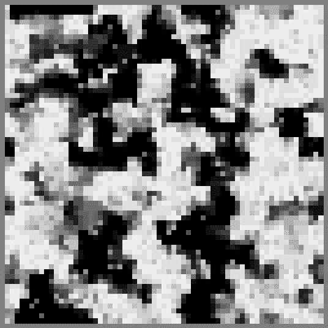 |
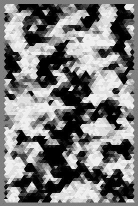 |
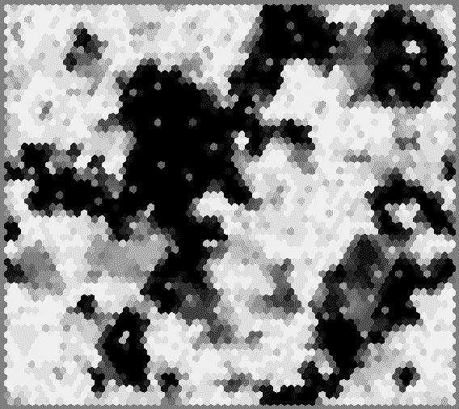 |
| (a) | (b) | (c) |
In order to tell the STOCHSIM program that 2-D complex arrays will be
used in a simulation, the following optional parameters must be
specified in the main simulation configuration file (STCHSTC.INI).
- UseSpatialExtensions
- This parameter specifies whether or not
STOCHSIM's spatial extensions will be used in a simulation. This
value must be set to 1 when using 2-D complex arrays. When this is
set to 0, STOCHSIM ignores the following two parameters and behaves
exactly like STOCHSIM 1.0.
- ArrayINIFile
- The path name specifying the location of the
complex array configuration file (e.g. ``./ARRAY.INI'').
- ArrayOutPrefix
- A path name which will be the prefix of all
array output files (e.g. ``../Output/''). The final name
of each complex array output file (e.g.
``../Output/ARRAY_SNAPSX.OUT'') will consist of a suffix
appended to this prefix.
Definition of complex arrays (ARRAY.INI)
The complex array configuration file can take any name, as long as it
matches the name specified in the simulation configuration file, but
we recommend using something fairly obvious (e.g.
``ARRAY.INI''). This file consists of three or more
sections: one [General] section, one [Neighbour
Sensitive Complex Types] section3.1, one or more
[ARRAY_NAME] (where ARRAY_NAME is the name of
the array) sections, and zero or more [Snapshot Variable
X] (where X is a number) sections. An
[ARRAY_NAME] section must be defined for each complex
array to be used in the model, and a [Snapshot Variable
X] section must be defined for each snapshot output that is
desired (see section 3.5). The parameters which must be
specified in each section are as follows:
- Arrays
- The list of complex arrays to be used. The name of each
array must be given here as a comma-separated list.
- DumpInterval
- The interval between times at which complex array
dumps should be stored (floating point).
- NumSnapshotVariables
- The number of snapshot variables that are
defined in this file (integer).
Note that as of version 1.4, the preferred location of this section is
in the complex configuration file (COMPLEX.INI). If it is
defined in both files, the definition in the complex array
configuration file (ARRAY.INI) will be ignored.
- NeighbourSensitiveComplexes
- A comma-separated list of symbols,
one for each neighbour-sensitive complex type in the reaction
system.
- S_NS_INIFile
- For each NS-Complex type in the model, a
line of the following form must be specified here:
S_NS_INIFile = Path
where Path is the path name of the configuration file for the
NS-Complex type S (usually named NS_X.INI,
where X is a number).
- Complex
- The name of the complex type that constitutes this
complex array.
- NeighbourSensitive
- Whether the complex type that constitutes
this complex array is neighbour sensitive (must always be set to 1
in present implementation).
- Geometry
- The geometry of the complex array (must be one of
``Square'', ``Triangle'' or ``Hexagon'').
- BoundaryCondition
- The boundary condition to be used for this
complex array (0 = Toroidal, 1 = Real boundaries).
- XDimension
- The length of the X-axis of the complex array (integer).
- YDimension
- The length of the Y-axis of the complex array (integer).
- CreateDumpFile
- Whether or not the state of this complex array
should be dumped to a file during simulation (1 = Yes, 0 = No).
Note that array dumps are different from array snapshots!
- EquilibrationInterval
- The interval between times at which this
complex array is to be equilibrated (floating point). All rapid
equilibria defined for each complex within the complex array will be
equilibrated at this frequency.
- Array
- The name of the array that this snapshot variable represents.
- States
- A comma-separated list of bit strings (or wildcard
strings) that represent all the states that this snapshot variable
will represent. It is convenient to use wildcard strings here, if
you want to monitor the state of specific flags (e.g. ``1?0?'', for
a complex with four state flags when you want to highlight all
complexes with the first flag on and the third flag off).
- StoreInterval
- The interval between the times at which values
of this snapshot variable are to be stored (floating point).
- AveragedOutput
- Specifies whether snapshot output of array
states should be be instantaneous or time-lapse (0 = instantaneous,
1 = time-lapse).
- AverageInterval
- If time-lapse snapshots are desired, give the
length of the interval to use for averaging (floating point; must be
smaller than value specified for StoreInterval). This
parameter is ignored if AveragedOutput is set to 0.
- SampleInterval
- If time-lapse snapshots are desired, give the
interval between times at which values should be sampled for
averaging (floating point; must be smaller than value specified for
AverageInterval). This parameter is ignored if
AveragedOutput is set to 0.
- NumRapidEqm
- The number of state flags of this NS-Complex that
are controlled by NS-RapidEqm's (integer). Note that this number
should only include the number of NS-RapidEqm's, and not normal
RapidEqm's, which are be defined separately in the multistate
complex configuration file (MS_X.INI).
- Reactions
- A comma-separated list of reaction identifiers for
NS-Reactions. Be careful to use the same identifiers as specified
in the reaction configuration file (REACTION.INI) and multistate
configuration file.
- NumNeighbours
- The number of nearest neighbours that this
NS-Complex has in the complex array (integer). Note that
this number must correctly match the geometry of the complex array
that this NS-Complex will be inserted into (3 for ``Triangle'', 4
for ``Square'' and 6 for ``Hexagon'').
Each NS-RapidEqm must have a section headed [Rapid Equilibrium
X] where X is the number of the rapid eqm
- Flag
- The name of the state flag which is controlled by an
NS-RapidEqm. ``State'' is also accepted for backward compatibility but
is deprecated.
- CoupledStates
- A comma separated list of wildcard strings (do
not use whitespaces), representing the states of nearest neighbours
that are coupled to this NS-RapidEqm.
- Wildcards
- A comma-separated list of all bit strings below which
contain one or more of the wildcard character, '?'. Wildcards
represent both 0 and 1.
- BitString
- Defines the NS-RapidEqm probabilities
associated to specific states. The parameter name,
BitString, can be a bit string representing a single state,
or a wildcard string representing multiple states. If wildcard
strings are used, they must also be declared in the
Wildcards parameter described above. The probabilities
defined in each line are applied only when the complex is in a state
which matches that (those) specified in the parameter name. The
value of this parameter must be a comma separated list of
rapid-equilibrium probabilities. The number of probabilities in
this list must be exactly NumNeighbours + 1. These
correspond to the rapid-equilibrium probabilities of the flag
(specified by the Flag parameter in this section) when
zero to NumNeighbours neighbours are in a coupled state.
Multiple instances of this line should be defined, if necessary.
For states that are not defined here, a default probability of zero
is assigned automatically.
Each reaction involving a NS-Complex must have a section [Reaction
XD] where X is the reaction number and D is direction ('F' or
'R').
- ReactNeighbourID
- A numerical identifier specifying the reacting
neighbour (e.g. for the ``Square'' geometry, 0 = North, 1 = East, 2
= South, 3 = West).
- EffectOnNeighbour
- A comma-separated list of state changes on
the reacting neighbour resulting from this reaction. A '+' character
before the name of the affected flag indicates that the flag is set (0
-> 1); a '-' character indicates that the flag is cleared (1 -> 0);
- Wildcards
- A comma-separated list of all bit strings below which
contain one or more of the wildcard character, '?'. Wildcards
represent both 0 and 1.
- BitString
- Defines the NS-Reaction relative rate
(floating point; 0 <= p <= 1) associated to specific states.
The parameter name, BitString, can be a bit string representing
a single state, or a wildcard string representing multiple states.
The probability defined in each line are applied only when the complex
is in a state which matches that (those) specified in the parameter
name. Multiple instances of this line should be defined, if
necessary. For states that are not defined here, a default probability
of zero is assigned automatically.
Output of complex-array states
Before reading this section, please note that the way in which the
output of complex-array states are specified in the INI files has
undergone considerable changes between STOCHSIM 1.2 and 1.4. In
this section we will only describe the new way of specifying the
output which only applies to STOCHSIM 1.4 and later. If you are
still using STOCHSIM 1.2, we recommend that you upgrade to
STOCHSIM 1.4, which incorporates various new features and also has
been further optimised for speed. However, if for some reason you
wish to keep using STOCHSIM 1.2, please refer to the older versions
of this manual.
STOCHSIM 1.2 and later versions can output the state of an entire
complex array at any given time during simulation as graphical
representations called snapshots. In a snapshot, each
NS-Complex in the complex array is represented by a polygon
(corresponding to that specified for the array geometry3.2), so the entire image representing the array will be a
tesselation of polygons. You can specify a single state
or a combination of states of the NS-Complex that you want highlighted
in the snapshot, so that the spatial distribution of specific states
that you are interested in can be visualised.
There are two types of snapshots that can be created,
instantaneous and time-lapse (see Figure
3.2). Instantaneous snapshots are snapshots in which
the instantaneous state of the complex array is recorded (i.e. the
value of each pixel is either 0 or 1). Time-lapse snapshots are
snapshots in which the value of every pixel in the snapshot is
averaged over time (i.e. the value of each pixel is between 0 and 1).
Figure 3.2:
STOCHSIM 1.2 and later versions can output
(a) instantaneous snapshots, or (b) time-lapse snapshots of an array
of NS-Complexes. The tiled polygons of an instantaneous snapshot
are either white or black. The polygons of a time-lapse snapshot
have grey level somewhere between white and black, depending on the
proportion of time that the corresponding NS-Complex spent in the
highlighted state.
| 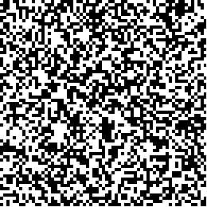 |
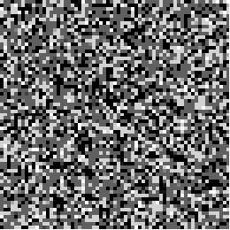 |
| (a) | (b)
|
In the instantaneous snapshots, white pixels represent NS-Complexes
which are in the highlighted state, and black pixels represent
NS-Complexes in all other states. In the time-lapse snapshots, grey
levels are assigned to the pixels according to the proportion of time
each NS-Complex object has spent in the highlighted state (i.e.
NS-Complexes which were in the highlighted state 100% of the time
will show up white, and NS-Complexes which were never in the
highlighted state will show up black).
Snapshots are recorded at a user-specified frequency during the
simulation. Time series of snapshots are recorded in output files
named ARRAY_SNAPSX.OUT, where X is a
numerical identifier for each series of snapshots. Each file contains
snapshots with different highlighted states. Each of these snapshot
files is essentially a concatenated series of X Pixmap (XPM) format
image files. To view each snapshot, the snapshot file must be split
into separate image files. As of version 1.4, a novel utility program
called arrayview.py for this purpose is providedin the
bin directory of the STOCHSIM distribution. This program
can generate a series of GIF files from a StochSim snapshot file. It
will also automatically determine the geometry of the array from the
snapshot file, and draw triangles, squares or hexagons as necessary
(see Figure 3.1). arraydraw.py is written in
Python, which works on just about all modern operating systems, and
comes installed as standard on most UNIX operatins systems these days.
To run arrayview.py, simply type
% arraydraw.py snapshot_file [edge_length]
at the UNIX command-line. [edge-length] is an optional
argument which tells arraydraw.py how long you want the edges
of the polygon to be. If you are using Microsoft Windows or a UNIX
operating system without python installed, you must first download and
install the python interpreter (available from
http://www.python.org). Once the images have been generaged,
any image viewer can be used to view the images.
If you want to created animations from the image files, you can use
external programs such as gifsicle (available from
http://www.lcdf.org/gifsicle/), which can generate GIF
animations from a series of GIF image files.
Let's say you have an array of receptors named ``ARRAY1''. The
NS-Complex which makes up this array has two state flags. The first
flag, named ``L'', represents the state of the ligand binding site (1
= bound; 0 = unbound). The second flag, named ``X'', represents the
conformational state of the receptor (1 = active conformation; 0 =
inactive conformation). Now, let us suppose that you want to monitor
both the changes in activity and ligand binding of all the receptors
in the array, averaged over time. For this you will need two series
of time-lapse snapshots, one to monitor the activity, and one to
monitor the state of the ligand binding site.
To specify the snapshots you want, you must set up a Snapshopt
Variable for each snapshot. These are defined in the complex array
configuration file (ARRAY.INI). Each snapshot variable must
be defined in its own [Snapshot Variable X] section,
which has seven parameters (see section 3.3 for formatting
details). The first five parameters must be defined for all snapshots
. The first parameter, Array specifies the name of the array
that the snapshot variable will represent. The next parameter,
State specifies the states of the NS-Complex that this
variable will highlight in the snapshot output, using a
comma-separated list of bit strings (or wildcard strings).
StoreInterval specifies how often snapshots from this
variable are to be output during the simulation, and
AveragedOutput is a boolean parameter specifying whether or
not the output snapshots should be averaged over time (set to 1 if
averaging is desired, and 0 otherwise). If AveragedOutput is
set to 1, the parameters AverageInterval and
SampleInterval must also be set. AverageInterval is
the length of the interval over which the snapshot values will be
averaged, and SampleInterval is the inverval between times at
which values are sampled for averaging. For this example, we will use
0.1 for the store and average intervals, and 0.001 for the sample
interval. Note that the value of AverageInterval cannot be
larger than StoreInterval, and SampleInterval cannot
be larger than AverageInterval.
So, for the example here, you would define two Snapshot Variables.
The two sections defining these variables would like this:
[Snapshot Variable 1] ;; Snapshot variables must be numbered sequentially
Array = ARRAY1 ;; Specify the name of the array here
States = 1? ;; States matching this wildcard string are hi-lited
Name = RL ;; You can name variables as you like
StoreInterval = 0.1 ;; Interval between storage times (s)
AveragedOutput = 1 ;; Indicates whether output should be averaged
AverageInterval = 0.1 ;; Length of averaging interval (s)
SampleInterval = 0.001 ;; How often values are sampled for averaging (s)
[Snapshot Variable 2]
Array = ARRAY1
States = ?1
Name = RX
StoreInterval = 0.1
AveragedOutput = 1
AverageInterval = 0.1
SampleInterval = 0.001
The wildcard strings specified for the State parameters,
``1?'' (matches both ``10'' and ``11'') tells STOCHSIM to create a
series of snapshots that highlight NS-Complexes with the first flag on
(receptors with ligand bound), and ``?1'' (matches both ``01'' and
``11'') tells STOCHSIM to create another series of snapshots that
highlight NS-Complexes with the second flag on (active receptors).
That's it! You should find two new output files after the
simulation, one named ARRAY_SNAPS1.OUT (with the
ligand-bound receptors highlighted) and another named
ARRAY_SNAPS2.OUT (with the active receptors highlighted).
As of version 1.4, STOCHSIM can output the complete state of the
complex array in ``dump files'' which can later be used to resume the
simulation from the time at which the state was dumped. If such an
output is desired for an array, the parameter CreateDumpFile
in the [ARRAY_NAME] section must be set to 1. The
frequency at which all array dumps will be output to dump files must
be specified using the parameter DumpInterval in the
[General] section of the complex array configuration file
(ARRAY.INI).
The original STOCHSIM simulator was written for Microsoft Windows and was
provided with a graphical user interface (GUI) based on the Microsoft MFC
widgets. Although the core simulation engine was written an ANSI C++, and
therefore could be ported to other operating systems with relative ease, the
widgets used for the GUI were not compatible with other operating systems such
as UNIX, Linux, or MacOS. Therefore to run STOCHSIM under such operating
systems, the user was required to write the simulation initialisation files
manually. This is tedious and error-prone. In order to ease the creation and
modification of simulation configurations under a large number of operating
environments, a novel interface written in Perl using the Tk widgets was
developed. This interface has been written and tested under Debian/GNU Linux,
but should run under most modern operating systems for which a perl/Tk exists
(It has also been tested under Microsoft Windows98). Note that at present, this
graphical interface should be considered as an alpha version, since not all of
the functionality of STOCHSIM are covered. In particular, the configuration
of dynamic values have yet to be implemented. The configuration of models using
the spatial extensions to STOCHSIM (see chapter 3) are
also still partially supported. If the configuration of neighbour sensitive
complexes is complete the user has to directly write the file
ARRAY.INI, following the instructions given in chapter chapter
3. See the chapter 2 about the dynamic
values. Note however that TkSTOCHSIM can read, write and launch those complex
simulations.
 When TkSTOCHSIM is
launched, the main window appears on the screen. TkSTOCHSIM can be
controlled with either the mouse or the keyboard. When using the keyboard,
pressing the <tab> key allows you to switch the focus between the various
widgets (buttons, text boxes, etc.) of the interface. A focused widget can be
activated by pressing the <space> bar or the <return> key. The menus can also be
activated via the keyboard by the sequences <Alt-f> (``File'' menu),
<Alt-s> (``Simulation'' menu), <Alt-o> (``Option'' menu) and
<Alt-h> (``Help'' menu). You can quit the program by clicking on the
``quit'' button or pressing <Ctrl-q>.
When TkSTOCHSIM is
launched, the main window appears on the screen. TkSTOCHSIM can be
controlled with either the mouse or the keyboard. When using the keyboard,
pressing the <tab> key allows you to switch the focus between the various
widgets (buttons, text boxes, etc.) of the interface. A focused widget can be
activated by pressing the <space> bar or the <return> key. The menus can also be
activated via the keyboard by the sequences <Alt-f> (``File'' menu),
<Alt-s> (``Simulation'' menu), <Alt-o> (``Option'' menu) and
<Alt-h> (``Help'' menu). You can quit the program by clicking on the
``quit'' button or pressing <Ctrl-q>.
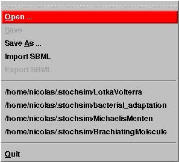
The ``File'' menu is
used to open an existing simulation (accelerator: <Ctrl-o>), to save the
current configuration (accelerator: <Ctrl-s>), to create a new simulation
or to rename the current simulation (accelerator: <Ctrl-a>) or to quit
(accelerator: <Ctrl-q>). You can import or export the simple simulations
using the SBML language level14.1designed by the ERATO project on systems biology. The ``File'' menu
also presents a history of past simulations, providing easy access to them. Note
that the current configuration is automatically saved when a simulation is
launched.
The ``Simulation'' menu currently presents only two options, one to run a
simulation (accelerator: <Ctrl-r>) and one to stop the simulation
(accelerator: <Ctrl-w>). This last option is not activated under MS Windows.
The ``Options'' menu permits to activate or deactivate the helping balloons.
Those balloons present a short explanation on the use of the different items of
the interface. It is a good idea to explore the graphical interface at least
once with the balloons activated.
Finally, the ``help'' menu provides the legal informations about the programs
and access to a PDF version of the present manual. The
first time you'll ask for the PDF version, the program shall ask you to point
the location of your favourite PDF reader. It will normally remind it afterward.
All the accelerators described should be directly available from the main
window, without the need to open the menus.
All the simulations are stored in a specific directory. Under Unix-like systems,
this directory is $HOME/.stochsim. Under Microsoft Windows9x the
simulations are stored in the subdirectory config_examples of the
STOCHSIM distribution. Each simulation is stored in a subdirectory, the name
of which is specified by the user. The structure of this directory is constant.
It contains two subdirectories, Input and Output, containing
the *.INI and *.OUT files respectively.
To open an existing simulation, you can go to the menu-bar and select
``File->Open...'', or type <Ctrl-o>. Then select an existing simulation
configuration file (usually named STCHSTC.INI). The usage of the file
selector could be lightly different according to the running operating system.
However, since it is the usual file selector of your system, its description is
out of the scope of the present manual.
To save a configuration, you can go to the menu-bar and select ``File->Save'' or
type <Ctrl-s>.
To create a new configuration or to save the current configuration under a
different name, you can to the menu-bar and select ``File->Save as...'' or type
<Ctrl-a>, and then select an existing STCHSTC.INI (in the
subdirectory Input of an existing simulation) or type the name of the
new main directory.
General configuration
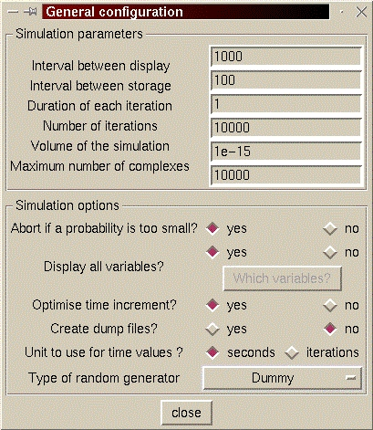
To setup a new
simulation, you need to setup the general configuration. To do so, click on the
button labelled ``General configuration''. The General configuration
window is then opened, where you can modify several options of the simulation.
The explanation of the various options is given in the chapter 2.
Note that the ``interval between display'' does affect only the data sent to
the standard output. It does not affect the graphical display (see below), which
is based on the stored data.
If you choose to display only some selected variables, answer ``no'' to the
question ``Display all variables'' and click on the button labelled ``Which
variables''. You need to setup the complexes to be used in the simulation before
playing with the variables to display (see sections 4.2.3 and
4.2.4). It is advisable to setup the output only when the
simulation is entirely written.
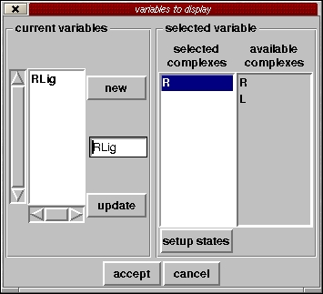
A new window appears,
presenting the current variables to display. You can create a new variable or
select existing ones. To delete a variable, select it and click while pressing
the <Ctrl> key. Once a variable is chosen, its name appears in the middle entry
widget and its composition appears in the middle-list. A variable can represent
several complexes. You can add complexes to the selected variable by dragging
and dropping them from the right list. To delete a complex from a variable,
select it and click while pressing the <Ctrl> key. A variable can represent
specific states of a multistate complex. In such a case, the variable can
include only one complex type. To configure the states to be displayed, select
the complex and click on the button ``setup states''. If you add another complex
to a variable already containing a multistate complex, this multistate is then
considered as a regular complex and the variable is supposed to display all its
states. Therefore you cannot configure the states anymore. This possibility
reappears if you delete all the other complexes but the multistate from the
variable.
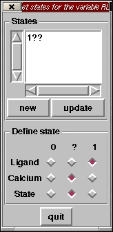
When you decide to
choose which states of a multistate complex you want to display, a new window
pops-up. A state is defined by a certain configuration of all the flags ('set'
or 1, 'unset' or 0 and undefined or '?'). You can create new states with the
``new'' button. The various flags of the multistate complex can be configured
with the radiobuttons. Do not forget to click on the ``update'' button to commit
the changes of the flags. As usual, after having selected a state, you can
click while pressing the <Ctrl> key to delete it.
Once your variables are set, you can record the changes you made and close the
variables to display window by clicking the ``accept'' button. The
``cancel'' button will close the window without changing your configuration.
When you close the General configuration window, the changes are
recorded. Be careful to undo all the changes you made if you want to ignore
them. Indeed there is currently no ``cancel'' button.
The elementary building blocks of the simulation are the components, which
permit to make up the complexes, i.e. the actually reacting entities.
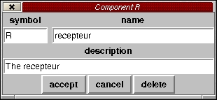
You can select an
existing component with the browsing list, or clicking on the nearby ``new''
button to create a new one. Up to 24 components can be created per simulation.
A Component window pops-up, allowing the configuration of the component.
In this window, you can enter a symbol for the component, a name, and a
description. The symbol is important since it will be used to construct the name
of the complexes including this component(maximal length
8 characters. The name can be longer and more explicit
(maximal length 32 characters). For instance the symbol can
be `p' and the name ``phosphate''. You can close the window, either recording
the changes, cancelling them or totally removing the component.
Creating complexes involved in the simulation
The complexes are the actual reacting entities of the simulation. You can select
an existing complex with the browsing list, or create a new one clicking on the
nearby ``new'' button. Up to 128 complexes can be created per
simulation.
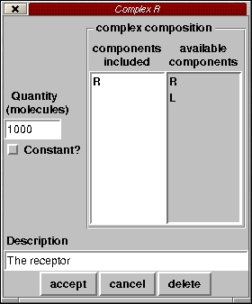
A Complex window
pops-up, allowing the configuration of the complex. To add a component to the
current complex, drag it from the rightmost list to the left one. To
remove a component from the current complex, select it from the leftmost list and
click while pressing the <Ctrl> key. The order of the components is important. A
complex made of A then B is different from a complex made of B then A. This
allows the definition of complexes which include the same component, but in
different places. Up to 16 components can be part of a complex.
In the left entry widget, enter the initial quantity of this
complex, at the beginning of the simulation. Note that this must be expressed
in number of molecules, not in concentration. If you check the tickbox
``Constant?'', the concentration of that complex will be maintained
constant4.2. Be careful not to fix the
concentration of a complex involved in unimolecular reactions, or to fix the
concentration of a multistate complex.
Clicking the three lowest buttons will close the Complex window, either
recording the changes, cancelling them or totally removing the complex.
Creating multistate complexes
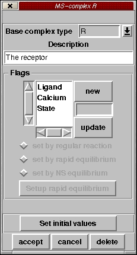
The multistate
complexes are a special kind of reacting entities which possess several binary
flags describing their various possible states (see section
1.3). You can select an existing multistate complex with the
browsing list, or create a new one clicking on the nearby ``new'' button.
A MS-complex window pops-up, allowing the configuration of the complex.
Each multistate complex has to be one of the complexes previously defined (see
section 4.2.3). If a complex is already defined as multistate,
you cannot use it for another multistate configuration (delete the previous
configuration first).
You can create a new flag, choose its name and add it to
the complex (``update'' button). The name of a flag cannot have more than
8 characters. To remove a flag from the complex, select it
and click while pressing the <Ctrl> key.
The state of each flag can be controlled either by a standard reaction (see the
section 4.2.6), or by a rapid equilibrium (if you are using the
spatial extensiosn, there are actually two different kinds of rapid equilibria,
see section 4.2.5). You can change the mode of control of
each flag. However, be careful and take a break before to do so. Indeed, a
quite complex configuration of a rapid equilibrium can be easily wiped-out. To
change the control mode from ``reactions'' to ``rapid equilibrium'', all the
reactions involved have to be suppressed before.
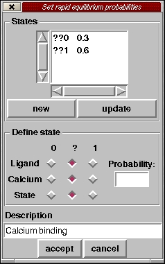
If a flag has to be
controlled by a classical multistate rapid equilibrium, you have to setup the
probability that it is ON, depending on the state of the entire complex. You can
create new states with the ``new'' button, and specifies the configuration of
each flag with the radiobuttons. The probability to set the controlled flag,
depending on the state of the other flags, can be entered in the right entry
widget. Do not forget to click on the ``update'' button to commit the changes
you've made to the state. After selecting a state, you can click while pressing
the <Ctrl> key to delete it.
Once your probabilities are set, you can record the changes you made and close
the rapid equilibrium window by clicking the ``accept'' button. The
``cancel'' button will close the window without changing your configuration.
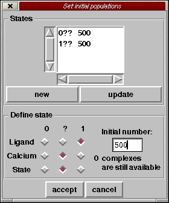
Once all the flags are
defined, the initial quantity of the complex in the various states at the
beginning of the simulation can be setup. A
click on the button ``Set initial values'' will cause a new window to pops-up.
Several states can be defined by setting up the various flags of the multistate
complex. You can create new states with the ``new'' button. The various flags of
the multistate complex can be set-up to define the state. For each state, you
can specify the number of complexes in this state at the beginning of the
simulation. The sum of all states cannot be superior to the total initial number
of the current complex, defined previously (see 4.2.3). Do not
forget to click on the ``update'' button to commit the changes of the flags. As
usual after selecting a state you can click while pressing the <Ctrl> key to
delete it. Once all the desired initial values are set, you can commit the
changes and quit (``accept'' button) or quit without recording changes
(``cancel'' button).
Clicking the three lowest buttons of the MS-complex window will close it,
either recording the changes, cancelling them or totally removing the complex.
Creating neighbour-sensitive complexes
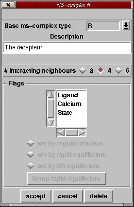
The
neighbour-sensitive complexes are a special kind of multistate complexes which
can react according to the state of their nearest neighbours. You can select an
existing multistate complex with the browsing list, or create a new one clicking
on the nearby ``new'' button.
A NS-complex window pops-up, allowing the configuration of the complex.
Each neighbour-sensitive complex has to be one of the multistate complexes
previously defined (see section 4.2.4).
The state of each flag can be controlled either by a standard reaction (see the
section 4.2.6), or by a rapid equilibrium (if you are using the
spatial extensiosn, there are actually two different kinds of rapid equilibria,
see section 4.2.5). You can change the mode of control of
each flag. However, be careful and take a break before to do so. Indeed, a
quite complex configuration of a rapid equilibrium can be easily wiped-out. To
change the control mode from ``reactions'' to ``rapid equilibrium'', all the
reactions involved have to be suppressed before.
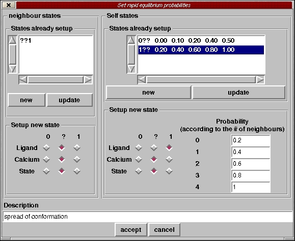
If a flag has to be
controled by a neighbour-sensitive rapid equilibrium, you have to setup the
probabilities that it is ON (rightmost frame), depending on the state of the
entire complex, as well as the states of its nearest-neighbours. If a
complex has N neighbours (N depending on the geometry of the lattice containing
this neighbour-sensitive complex). , N+1 probabilities have to be set,
corresponding to 0,1 ...N neighbours existing in particular states. Those
states are defined in the leftmost frame.
In both frames you can create new states with the ``new'' button, and specifies
the configuration of each flag with the radiobuttons. The probabilities to set
the controled flag, depending on the state of the other flags, can be entered in
the right entry widgets. In each frame, do not forget to click on the ``update''
button to commit the changes you've made to the state. After selecting a state,
you can click while pressing the <Ctrl> key to delete it.
Once your probabilities are set, you can record the changes you made and close
the rapid equilibrium window by clicking the ``accept'' button. The
``cancel'' button will close the window without changing your configuration.
Clicking the three lowest buttons of the NS-complex window will close it,
either recording the changes, cancelling them or totally removing the complex.
Creating reactions
You can select an existing reaction with the browsing list, or create a new one
by clicking on the nearby ``new'' button.
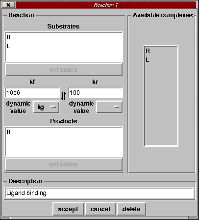
A Reaction window
pops-up, allowing the configuration of the reaction. To add a complex as a
substrate or a product, select it in the list on the right, and drag it either in
the substrate list or the product list. To remove a complex from either the
substrates or the products, select it from the appropriate list and click while
pressing the <Ctrl> key. Note that a reaction has to contain at least one
non-constant substrate and one non-constant product.
Enter the forward and reverse rate in units of s-1 or
M-1s-1 (according to the order of the
reaction). If a substrate or a product is a multistate complex, you can further
refined the effect of the reaction on the complex, and the effect of the states
on the rate constants.
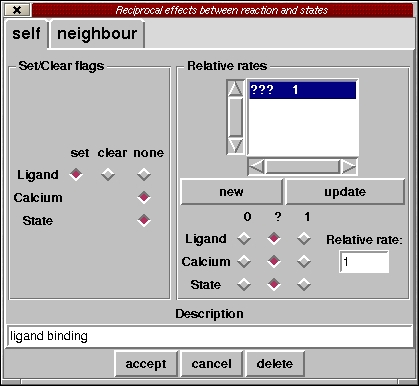
A click on the button
``set states'' (activated when you select a multistate complex) will pops-up a
new window. Two tabs are present ``self'' and ``neighbour''. The second tab is
activated only when the spatial extensions are used.
The ``self'' tab permits to configure the classical involvement of a multistate
complex in a reaction. The left frame permits to set-up the effect of the
reaction on the complex, i.e. to set or clear particular flags. A flag which is
set up by a rapid equilibrium (either multistate or neighbour-sensitive) cannot
be modified here. Change its status first, as explained in the section
4.2.4. The right frame permits to define several states (i.e.
sets of flag values) and their effects on the basal reaction rate.
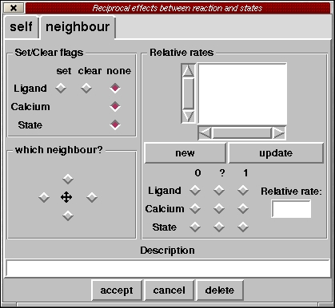
The ``neighbour'' tab
permits to configure the effect of a neighbour-sensitive complex on the reaction
involving one of its neighbours. The left-top frame permits to set-up the effect
of the reaction on the neighbouring complex, i.e. to set or clear particular
flags. A flag which is set up by a rapid equilibrium (either multistate or
neighbour-sensitive) cannot be modified here. Change its status first, as
explained in the section 4.2.4. The right frame permits to
define several states (i.e. sets of flag values) of the complex and their
effects on the basal rate of the reaction that its neighbour undergoes. Finally
the left-bottom frame allow to choose which neighbour is affected. The number of
possible neighbours depends on the geometry of the lattice containing these
neighbour-sensitive complexes.
Once all the desired values are set, you can commit the changes and quit
(``accept'' button) or quit without recording changes (``cancel'' button).
Clicking the three lowest buttons will close the Reaction window, either
recording the changes, cancelling them or totally removing the reaction.
Setting-up the dynamic values
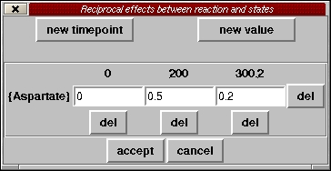 Dynamic values permit to abruptly change a
parameter of the simulation, such as a reaction rates and rapid
equilibriums. A click on the button dynamic values" of the main window
should open a pop-up window, where one can create, modify or delete a
dynamic value. Entering a value, then clicking on add time, will add a
new column corresponding to an instant where some dynamic values should
be changed. Entering a value, then clicking on add value, will add a new
row column corresponding to a new dynamic parameter. In the cells you
can then enter the values that the dynamic parameters are to take at
each timepoint. Clicking on the "del" button in beside a row or below a
column will remove the corresponding dynamic value timepoint.
Once all the desired values are set, you can commit the changes and quit
(``accept'' button) or quit without recording changes (``cancel'' button).
Once setup, the simulation can be launched from TkSTOCHSIM by choosing using
``run'' from the ``simulation'' menu, or by typing <ctrl-r>. Be
careful, as the configuration is automatically saved before the simulation is
run.
Note that once STOCHSIM is launched, it is independent of the Tk interface.
To quit TkSTOCHSIM will not kill STOCHSIM. You can modify the
configuration while a simulation is running. However wait for the
completion of a simulation before to launch another one. If the various
STOCHSIM processes write in the same file, the result will be an absolute
mess!
To quit TkSTOCHSIM, use the menu ``File->Quit'', click the ``quit'' button or
type <Ctrl-q>.
You can visualise the result of a simulation, stored in the file
VAR.OUT. To do so, click on the button ``view data'' and a text window
will pops-up. The same result can be achieved with the accelerator <Ctrl-v>.
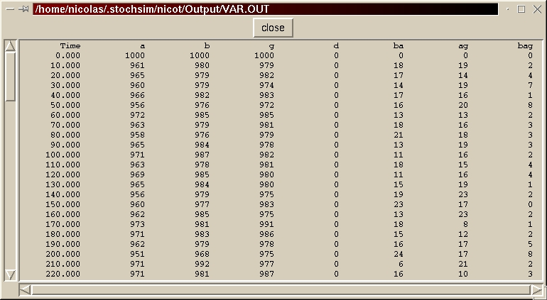
If the button ``show data'' is disabled, either no simulation are loaded, either
the file VAR.OUT does not exist (i.e. the simulation was never run).
Note that you can visualise the results while the simulation is running since
STOCHSIM periodically update the file VAR.OUT.
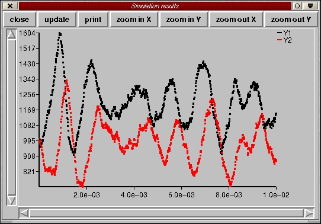
The results can also be
visualised graphically by clicking the button ``plot''. A graph window will then
pops-up, showing the time course of the variables you chose to display, or of
all the complexes, see section 4.2.1. The same result can be achieved
with the accelerator <Ctrl-p>. The graphs will not automatically refresh.
However you can update them by clicking on the relevant button. The colors of
the curves are chosen by default. You can choose your own by editing the file
stochsimrc (see next section). You can zoom-in and zoom-out the graph,
independently for both axis. You can record snapshots of the graph at any time,
by saving it in a postscript file.
You can monitor the progress of the simulation with a progress bar
launched by the button ``monitor''. The progress bar will refresh itself
automatically. However this consumes memory and cpu time. Therefore it is better
to launch it periodically to probe the simulation progress but to kill it
otherwise.
A file, stochsimrc, is present in the directory ``lib'' of the
distribution. It contains information about the setup of the Perl/Tk interface.
A copy of this file is normally installed in the personal directory
.stochsim of each user (or in the directory config_examples
under Microsoft Windows9x). This file can be manually edited to customise
TkSTOCHSIM.
- Bray, D., Levin, M. D. & Morton-Firth, C. J. (1998). Receptor
clustering as a cellular mechanism to control sensitivity. Nature 393,
85-88.
- Duke, T. A. J. & Bray, D. (1999). Heightened sensitivity of a
lattice of membrane receptors. Proc. Natl. Acad. Sci. USA 96,
10104-10108.
- Gillespie, D. T. (1976). A general method for numerically
simulating the stochastic time evolution of coupled chemical
reactions. J. Comput. Phys. 22, 403-434.
- Gillespie, D. T. (1977). Exact stochastic simulation of coupled
chemical reactions. J. Phys. Chem. 81, 2340-2361.
- McAdams, H. H. & Arkin, A. (1997). Stochastic mechanisms in
gene expression. Proc. Natl. Acad. Sci .USA 94, 814-819.
- Morton-Firth, C. J. (1998). Stochastic simulation of cell
signalling pathways. Ph.D. Thesis, University of Cambridge.
- Morton-Firth, C. J. & Bray, D. (1998). Predicting temporal
fluctuations in an intracellular signalling pathway. J. Theor. Biol.
192, 117-128.
- Morton-Firth, C. J., Shimizu, T. S. & Bray, D. (1999). A
free-energy-based stochastic simulation of the Tar receptor complex.
J. Mol. Biol.286, 1059-1074.
- Shimizu, T. S., Le Novère, N., Levin, M. D., Beavil, A. J.,
Sutton, B. J., and Bray, D. (2000). Molecular model of a lattice of
signalling proteins involved in bacterial chemotaxis. Nat. Cell
Biol. 2, 792-796.
The computer program STOCHSIM was written by Carl Firth as part of his
PhD work at the University of Cambridge (Morton-Firth, 1998). It was
developed as part of a study of bacterial chemotaxis as a more
realistic way to represent the stochastic features of this signalling
pathway and also as a means to handle the large numbers of individual
reactions encountered (Morton-Firth & Bray, 1998; Morton-Firth et
al., 1999). The program provides a general purpose biochemical
simulator in which individual molecules or molecular complexes are
represented as individual software objects. Reactions between
molecules occur stochastically, according to probabilities derived
from known rate constants. An important feature of the program is its
ability to represent multiple post-translational modifications and
conformational states of protein molecules.
STOCHSIM consists of a platform-independent core simulation engine
encapsulating the algorithm described above and separate graphical user
interfaces.
Each molecule or molecular species is represented as a separate software object
in STOCHSIM, and the simulation also includes dummy molecules, or
``pseudo-molecule'' used in the simulation of unimolecular reactions. Time is
quantised into a series of discrete, independent time-slices, the size of
which is determined by the most rapid reaction in the system. In each
time-slice, one molecule (not a pseudo-molecule) is selected at random. Then,
another object, in this case either a molecule or a pseudo-molecule, is
selected at random. If two molecules are selected, any reaction that occurs
will be bimolecular, whereas if one molecule and a pseudo-molecule are
selected, it will be unimolecular. Another random number is then generated and
used to see if a reaction occurs; the probability of a reaction is retrieved
from a look-up table and if the probability exceeds the random number, the
particles do not react. On the other hand, if the probability is less than the
random number, the particles react, and the system is updated accordingly. The
next time-slice then begins with another pair of molecules being selected.
Whenever a molecule in the system can exist in more than one state then the
program encodes it as a ``multistate molecule'' with a series of binary flags.
Each flag represents a state or property of the molecule, such as a
conformational state; ligand binding; phosphorylation, methylation, or other
covalent modification. The flags specify the instantaneous state of the
molecule and may modify the reactions it can perform. For instance, a
multistate molecule may participate in a reaction at an increased rate as a
result of phosphorylation, or fail to react because it is in an inactive
conformation. The flags themselves can be modified in each time step as a
result of a reaction, or they can be instantaneously equilibrated according to
a fixed probability. The latter tactic is used with processes such as ligand
binding or conformational change that occur several orders of magnitude faster
than other chemical reactions in the system.
If, in a particular time step, STOCHSIM selects one or more multistate
molecules, then it proceeds in the following manner. First any
rapidly-equilibrated ``fast flags'' on the molecule are assigned to be on or
off according to a weighted probability. A protein conformation flag, for
example, can be set to be active or inactive, according to which other flags
of the molecules are currently on. A ligand binding flag can, if desired, be
set in a similar fashion, based on the concentration of ligand and the Kd.
Once the fast flags have been set, then the program inspects the reactions
available to species A and B. The chemical change associated with each type of
reaction (binding, phosphotransfer, methylation, etc.) is represented in the
program together with a "base values" of the reaction rate constants. The
particular instantiation of the reaction, determined by the current state of
the flags on A and B, is accessed from an array of values calculated at the
beginning of the program, when the reaction system is being initialised.
Values in the array modify the reaction probability according to the particular
set of binary flags. In this manner, the STOCHSIM calculates a set of
probabilities, corresponding to the reactions available to the particular
states of molecules A and B, and then uses a random number to select which
reaction (if any) will be executed in the next step. The reaction will be
performed, if appropriate, and the relevant slow flag flipped.
Although it sounds complicated, the above sequence of events within an
individual iteration takes place very quickly and even a relatively slow
computer can carry out hundreds of thousands of iterations every second.
Moreover, the strategy has the advantage of being intuitively simple and close
to physical reality. For example, it is easy, if required, to label selected
molecules and to follow their changes with time. Lastly, the speed of the
program depends not on the number of reactions but on the numbers of molecular
species in the simulation (with a time of execution proportional to N squared).
The stochastic simulation of biochemical reactions was pioneered by
Gillespie, who developed an elegant and efficient algorithm for this
purpose (Gillespie, 1976; Gillespie, 1977). Gillespie showed in
rigorous fashion, that his algorithm gives the same result, on
average, as conventional kinetic treatments. In ensuing years, the
algorithm has been widely used to analyse biochemical kinetics and,
most recently, to simulate the stochastic events in lambda lysogeny
(McAdams & Arkin, 1997). In view of its evident success, the question
therefore arises: Why in our work we did not use the Gillespie
algorithm but chose to develop our own formulation?
The Gillespie algorithm makes time steps of variable length, based on
the rate constants and population size of each chemical species. The
probability of one reaction occurring relative to another is obtained
by multiplying the rate constant of each reaction with the numbers of
its substrate molecules. A random number is then used to choose which
reaction will occur, based on relative probabilities, and another
random number determines how long the step will last. The chemical
populations are altered according to the stoichiometry of the reaction
and the process is repeated. Perhaps because the algorithm was
developed at a time when computers were several thousand times slower
than they are today, it makes extremely efficient use of CPU time. At
each iteration it selects the reaction most likely to occur and
chooses a time step that optimises that reaction, so that the
simulation proceeds extremely efficiently.
However, the efficiency of the Gillespie algorithm comes at a cost.
The elegant algorithm that selects which reaction to perform, and what
time interval to take, cannot represent individual molecular events in
the reaction. With regard to the reactions of a typical cell
signalling pathway, for example, it cannot associate physical
quantities with each molecule, nor trace the fate of particular
molecules over a period of time. This means that it is not possible to
extend this algorithm to a more thermodynamically realistic model in
which energies and conformational states are associated with each
molecule. Similarly, without the ability to associate positional and
velocity information with each particle, the algorithm cannot be
adapted to simulate diffusion, localisation or spatial heterogeneity.
A second deficiency of the Gillespie algorithm (from a cell biological
standpoint) is that it cannot easily handle the reactions of
multi-state molecules. Protein molecules are very frequently modified
in the cell so as to alter their catalytic activity, binding affinity
and so on. Cell signalling pathways, for example, carry information in
the form of chemical changes such as phosphorylation or methylation,
or as conformational state. A multi-protein complex may contain
upwards of twenty sites, each of which can often be modified
independently and each of which can, in principle, influence how the
complex will participate in chemical reactions. With twenty sites, a
complex can exist in a total of 220, or one million,
unique states, each of which could react in a slightly different way.
If our multi-protein complex interacts with only ten other chemical
species, a detailed model may contain as many as ten million distinct
chemical reactions, a combinatorial explosion. Any program in which
the time taken increases in proportion to the number of reactions, as
in a conventional, deterministic model, or in the Gillespie method,
will come to a halt under these conditions.
To summarise, STOCHSIM is likely to be slower than the Gillespie
algorithm in calculating the eventual outcome of a small set of simple
biochemical reactions, especially when the numbers of molecules is
large. However, if the system contains molecules that can exist in
multiple states, then STOCHSIM will not only be faster but also
closer to physical reality. It is easy, if required, to label selected
molecules in this program and to follow their changes with time,
including changes to their detailed post-translational modification
and conformational state. Although the program does not, in its
present form, incorporate spatial information regarding the positions
of molecules, we have found that such modification can be made in a
straightforward manner.
STOCHSIM, the stochastic simulator
This document was generated using the
LaTeX2HTML translator Version 99.2beta6 (1.42)
Copyright © 1993, 1994, 1995, 1996,
Nikos Drakos,
Computer Based Learning Unit, University of Leeds.
Copyright © 1997, 1998, 1999,
Ross Moore,
Mathematics Department, Macquarie University, Sydney.
The command line arguments were:
latex2html -split 0 stochsim_manual.tex
The translation was initiated by Nicolas Le Novere on 2001-06-26
Footnotes
- ...
paper1.1
- This paragraph was written in 1998
- ... section3.1
- As of version 1.4, the
preferred location of this section is in the complex configuration
file (COMPLEX.INI).
- ... geometry3.2
- Note
that in STOCHSIM 1.2, only the ``Square'' geometry was
supported.
- ... level14.1
- See
http://www.cds.caltech.edu/erato/sbml-level-1/sbml-level-1.html.
- ...
constant4.2
- In order to do that, the GUI tranforms all the bimolecular
reactions into unimolecular reactions, merging the rate constants and the
concentrations of the constant substrates. Compare for instance the values of
the kf rate constant for the reaction
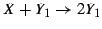 shown in the GUI
and in the file REACTION.INI.
Nicolas Le Novere
2001-06-26